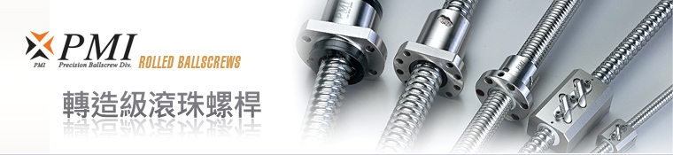

滾珠螺桿系列
轉造級滾珠螺桿
滾珠螺桿庫存區
線性滑軌系列
KM
線性模組系列
滾珠螺桿支撐座
高荷重螺桿支撐座
馬達傳動座
聯軸器
精密鎖定螺帽
利茗減速機
直線軸承
LMC
單軸心式滑軌
LGD
雙軸心式滑軌
轉造級滾珠螺桿
Rolled Ballscrews
Rolled Ballscrews DWG

CAD
檔案下載 (轉造級滾珠螺桿) DWG
FSIW
內循環
FSIN
內循環
FSKW
高導程
FSWW
外循環
FSVW
外循環
RSVW
外循環
FSBW
外循環
SSVW
外循環
螺桿尺寸
鋼珠直徑
循環圈數
圈 x 列(螺紋數)
螺帽編號
CAD 下載
外徑
導程
15
10
3.175
2.8 x 2
FSKW1510-5.6P
16
16
3.175
1.8 x 1
FSKW1610-1.8P
20
20
3.175
1.8 x 2
FSKW2020-3.6P
25
25
3.969
1.8 x 2
FSKW2525-3.6P
1.8 x 4
FSKW2525-7.2P
32
32
4.762
1.8 x 2
FSKW3232-3.6P
1.8 x 4
FSKW3232-7.2P
40
40
6.350
1.8 x 2
FSKW4040-3.6P
1.8 x 4
FSKW4040-7.2P
轉造級滾珠螺桿
搭配研磨級螺帽取代了傳統
艾克姆導螺桿
、梯形導螺桿之傳動方式，可提升運轉順暢度、降低摩擦力及軸向背隙之優點，且供貨迅速、價格低廉，轉造級與研磨級滾珠導螺桿除了在導程誤差之定義與幾何公差有所差異外，亦可用相同預壓方式來消除軸向背隙。
返回首頁
|
產品介紹
|
滾珠螺桿
|
線性滑軌
|
線性模組
|
聯軸器
|
檔案下載
|
聯絡我們
Copyright
© 2018
HONG YI PRECISION CO.,LTD.
鴻翊精密股份有限公司
TEL: 04-2426 5828 FAX: 04-2425 9082
台中市北屯區環中路一段1702-3號